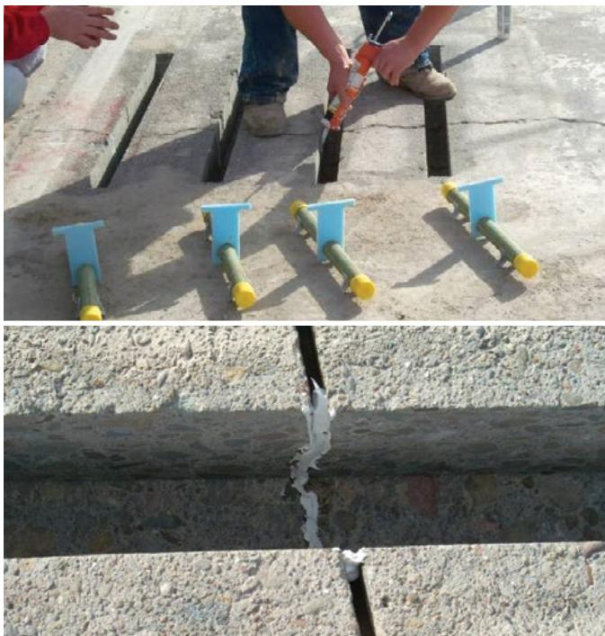
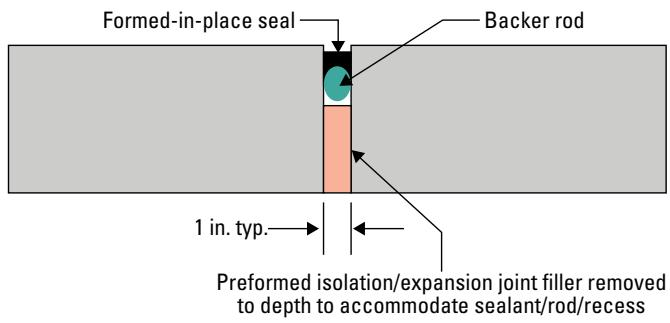
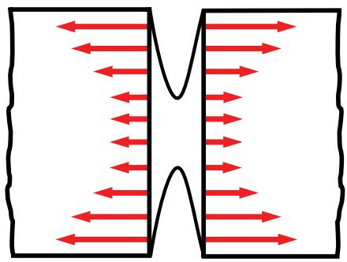

Sealant Installation
Sealant installation is the systematic process of preparing pavement joints to receive a flexible barrier that blocks water, gases, and debris while accommodating structural movements. The procedure begins with thorough cleaning of joint sidewalls to remove contaminants such as dust, oil, or laitance, which is critical for ensuring long-term adhesion [2] [3]. A compressible backer rod is inserted into the joint reservoir to control sealant depth, prevent three-sided bonding, and define the geometry that governs stress distribution during movement [1] [2]. The selected sealant material, such as silicone or polyurethane, is then applied to form a continuous, watertight barrier capable of withstanding expected strain limits without failing [1] [2]. This protective layer reduces moisture-induced deterioration in the underlying concrete by preventing water infiltration and trapping within the joint cavity [4].
Sources (4)
Key findings
- Successful sealant installation required meticulous joint-reservoir preparation because contamination or insufficient cleaning dramatically reduced adhesion and long-term performance [1] [3].
- A proper shape factor minimized stresses within the sealant and at the interface by using a backer rod that was flexible, non-absorbent, closed-cell, and approximately 25% larger in diameter than the joint opening [1] [2].
- Field studies demonstrated that most pavement water infiltrates through longitudinal joints, making sealant maintenance critical for preventing water damage [4].
- The report evaluated a disciplined five-step quality control process that included rigorous cleaning with water, abrasive blasting, and filtered air to prevent sealant failure caused by inadequate preparation [3].
- Effective joint sealing required the effective cleaning of joint sidewalls as the most important aspect of the process, utilizing high-pressure air or water washes and media blasting while prohibiting power-driven wire brushes [2].
- Sealant application required immediate installation after backer rod placement to prevent condensation and debris from compromising durability [2].
- Silicone products demonstrated potential service lives of twelve to sixteen years, whereas typical joint resealants lasted only two to eight years [4].
Joint Preparation and Sealant Installation Procedures
Joint preparation and sealant installation involve placing a flexible barrier into pavement joints to prevent water, debris, and gases from infiltrating the underlying structure [1]. The process begins with thorough cleaning of joint sidewalls to remove contaminants such as dust, oil, or old sealant, which is critical for ensuring proper adhesion and long-term performance [2] [3]. A compressible backer rod is inserted to define the cavity depth and prevent three-sided bonding, thereby controlling the sealant’s shape factor and minimizing interfacial stresses during movement [1] [2]. The selected sealant material is then applied to form a continuous, watertight barrier that accommodates expected pavement movements while maintaining its protective function [1] [4].
The figure below illustrates the proper technique for inserting a backer rod using a handheld roller.
 A worker uses a handheld tool to insert backer rod into a concrete pavement joint. [2]
A worker uses a handheld tool to insert backer rod into a concrete pavement joint. [2]
The image shows a construction worker standing on a concrete surface, holding a long vertical tool that is inserted into a narrow crack in the pavement. A large black hose connects this handheld device to a red piece of machinery positioned nearby.
Research problem — How can joint preparation protocols be optimized to eliminate residual contamination that compromises sealant adhesion and leads to premature failure [3]? What specific installation procedures are required to prevent the infiltration of water and debris while ensuring the sealant remains properly restrained within the joint reservoir [1]? How do improper definitions of sealant shape factors and the selection of inappropriate backer rods contribute to excessive stress, moisture trapping, and accelerated pavement deterioration [2]?
State of the art — Current practice mandates meticulous joint preparation involving high-pressure water washing, abrasive blasting of the joint faces to remove laitance and debris, and verification of cleanliness using standardized wipe tests before any sealant is applied [1] [2] [3]. Installation procedures require the insertion of a closed-cell backer rod sized to fit snugly without stretching, followed by timely sealant placement that adheres to manufacturer-specified curing temperatures and engineered shape-factor limits to manage deformation stresses [1] [2] [3]. The prevailing methodology distinguishes between liquid-applied sealants requiring specific width-to-depth ratios for proper bonding and preformed compression seals designed to operate within defined compression ranges across expected temperature cycles [1] [2].
The figure below illustrates a media-blasted and cleaned slot, demonstrating the essential joint preparation required before sealant application.

Applying caulk to dowel bar slot sides and bottom (top) and caulked pavement joint (bottom) [2]The top image shows a worker applying sealant into the vertical sidewalls of a prepared concrete slot using a caulking gun, while several blue support chairs with yellow-capped dowels are staged nearby. The bottom image displays a finished pavement joint where white sealant has been applied to bridge the gap between concrete slabs, creating a watertight barrier that accommodates structural movements.
Findings from the reports
- Successful sealant installation required meticulous joint-reservoir preparation because contamination or insufficient cleaning dramatically reduced adhesion and long-term performance [1] [3].
- A proper shape factor minimized stresses within the sealant and at the interface by using a backer rod that was flexible, non-absorbent, closed-cell, and approximately 25% larger in diameter than the joint opening [1] [2].
- Field studies demonstrated that most pavement water infiltrates through longitudinal joints, making sealant maintenance critical for preventing water damage [4].
- The report evaluated a disciplined five-step quality control process that included rigorous cleaning with water, abrasive blasting, and filtered air to prevent sealant failure caused by inadequate preparation [3].
- Effective joint sealing required the effective cleaning of joint sidewalls as the most important aspect of the process, utilizing high-pressure air or water washes and media blasting while prohibiting power-driven wire brushes [2].
- Sealant application required immediate installation after backer rod placement to prevent condensation and debris from compromising durability [2].
- Silicone products demonstrated potential service lives of twelve to sixteen years, whereas typical joint resealants lasted only two to eight years [4].
Novelty & rigor — The method introduces a dedicated quality-control sequence that exceeds standard mandates by requiring a second saw cut to form the reservoir and an intensive cleaning regime involving wet diamond blade sawing, abrasive blasting, and high-flow filtered air [3]. It distinguishes itself through tightly controlled performance specifications for joint geometry, including precise shape factors and backer rod sizing that is significantly larger than the joint width to ensure a snug fit without stretching [2]. The approach mandates immediate sealant application after backer rod placement and verifies reservoir cleanliness using specific wipe tests, creating a reproducible protocol that prevents condensation and debris accumulation [2] [3].
The following figure illustrates an expansion joint detail where a backer rod is installed to ensure the proper joint shape factor required by this rigorous protocol.

Expansion joint detail with a backer rod installed to ensure proper joint shape factor. [2]The figure displays a cross-section of an expansion joint where the preformed isolation filler has been removed to create a reservoir for sealant installation. A cylindrical backer rod is inserted into the lower portion of this gap, while a formed-in-place sealant fills the upper section above it.
Reported values
| Parameter | Value | Context | Source |
|---|---|---|---|
| reservoir shape factor | 0.5 | silicone and two - component , cold - poured sealants | [1] |
| backer rod diameter increase | 25% | uncompressed width relative to joint or crack width | [2] |
| backer rod diameter increase | about 25% | larger in diameter than joint width | [2] |
| backer rod melting temperature margin | at least 25°F | higher than sealant application temperature | [2] |
| cleaning cost proportion | less than 10% | of total installation expense | [2] |
| hot-applied sealant strain tolerance | 25% to 35% | strain relative to original width | [2] |
| media blasting depth | 1 in. | top of the joint to be cleaned | [2] |
| silicone sealant strain tolerance | 50% to 100% | strain relative to original width | [2] |
| saw horsepower | 65 horsepower | cutting hardened concrete | [3] |
| sealant failure threshold | 25 percent | sealant installation no longer functional | [4] |
| water infiltration proportion | 65 to 80 percent | water entering pavement from surface through longitudinal joints or cracks | [4] |
Across the reviewed reports, successful sealant installation is fundamentally dependent on rigorous joint preparation and precise reservoir geometry to ensure adhesion and accommodate movement. The collective evidence establishes that meticulous cleaning of joint faces using oil-free air or water washing is the primary determinant of long-term performance, as contamination significantly reduces sealant adhesion. Proper installation requires the use of a closed-cell backer rod sized 25–50% larger than the joint opening to achieve optimal shape factors that minimize interfacial stresses during thermal expansion and contraction. Sealant application must occur immediately after reservoir preparation to prevent moisture or debris accumulation, with specific material selection dictated by the required strain tolerance of hot-poured versus silicone systems. [1] [2] [3] [4]
The following figure illustrates how variations in sealant depth influence the resulting internal stresses within the joint.
 Schematic of joint sealant reservoir showing key geometric dimensions and components. [2]
Schematic of joint sealant reservoir showing key geometric dimensions and components. [2]
The figure displays a cross-section of a pavement joint containing a black sealant layer, a grey backer rod, and specific dimensional labels for joint width (W), sealant depth (D), and recess height.
Implications — Joint preparation must be treated as a critical quality control phase requiring rigorous cleaning and verification to ensure proper adhesion, as inadequate surface treatment directly compromises sealant effectiveness [1] [3]. Installation procedures should strictly enforce the use of closed-cell backer rods sized appropriately for the joint width to prevent water entrapment and ensure optimal shape factor for stress distribution [2]. Sealant selection must be matched to anticipated joint movement, utilizing high-performance materials for larger displacements to extend service life and reduce the frequency of maintenance interventions [1] [4].
The following figure illustrates a typical application with a 2-inch deep seal.

Schematic of a joint sealant system with backer rod and applied sealant. [2]The figure displays a cross-section of two pavement slabs separated by a vertical gap containing a compressible backer rod. Red arrows indicate the direction of stress distribution within the sealant material as it accommodates structural movements away from the joint center.
Limitations — Sealant installation effectiveness relies heavily on crew diligence and proper maintenance, as quality control steps are often advisory rather than mandated [3]. Specific procedural constraints include the risk of moisture trapping by backer rods, potential concrete damage from overheating during drying, and bonding impairment caused by prohibited cleaning methods [2]. Performance outcomes are further limited by material incompatibilities with certain substrates and the necessity of adequate joint opening dimensions for proper sealant penetration [1] [2].
The following figure illustrates a preformed seal detail to demonstrate proper concrete pavement joint sealant configuration.
 Concrete pavement joint sealant details showing a preformed compression seal. [3]
Concrete pavement joint sealant details showing a preformed compression seal. [3]
The figure displays a cross-section of a concrete pavement joint containing a vertical, V-shaped preformed compression seal installed within the reservoir.
Evidence: 4 reports (4 primary)
Related concepts
In this hierarchy
- Parent: Joint Sealing
- Sibling: Joint Maintenance
- Sibling: Pavement Maintenance
- Sibling: Sealant Performance
Related by shared evidence
- Aggregate Management — shares 4 reports
- Cement Chemistry — shares 4 reports
- Cementitious Materials — shares 4 reports
- Concrete Mixture Design — shares 4 reports
- Concrete Production — shares 4 reports
- Concrete Testing — shares 4 reports
- Cracking Mitigation — shares 4 reports
- Joint Maintenance — shares 4 reports
Similar topics
- Sealant Performance
- Pavement Maintenance
- Joint Maintenance
- Joint Sealing
- Sealant Application
- Dowel Bar Retrofit
- Slab Stabilization
- Pavement Repairs
Source coverage
| Source | Joint Preparation and Sealant Installation Procedures |
|---|---|
| [1] | ✓ |
| [2] | ✓ |
| [3] | ✓ |
| [4] | ✓ |
References
- Integrated Materials and Construction Practices for Concrete Pavement: A STATE-OF-THE-PRACTICE MANUAL (2019)
- Concrete Pavement Preservation Guide (Third Edition) (2022)
- Best Practices Manual: Quality Control and Quality Acceptance of Concrete Airport Pavement (2025)
- Guide to the Prevention and Restoration of Early Joint Deterioration inConcrete Pavements (2016)
Feedback on this page